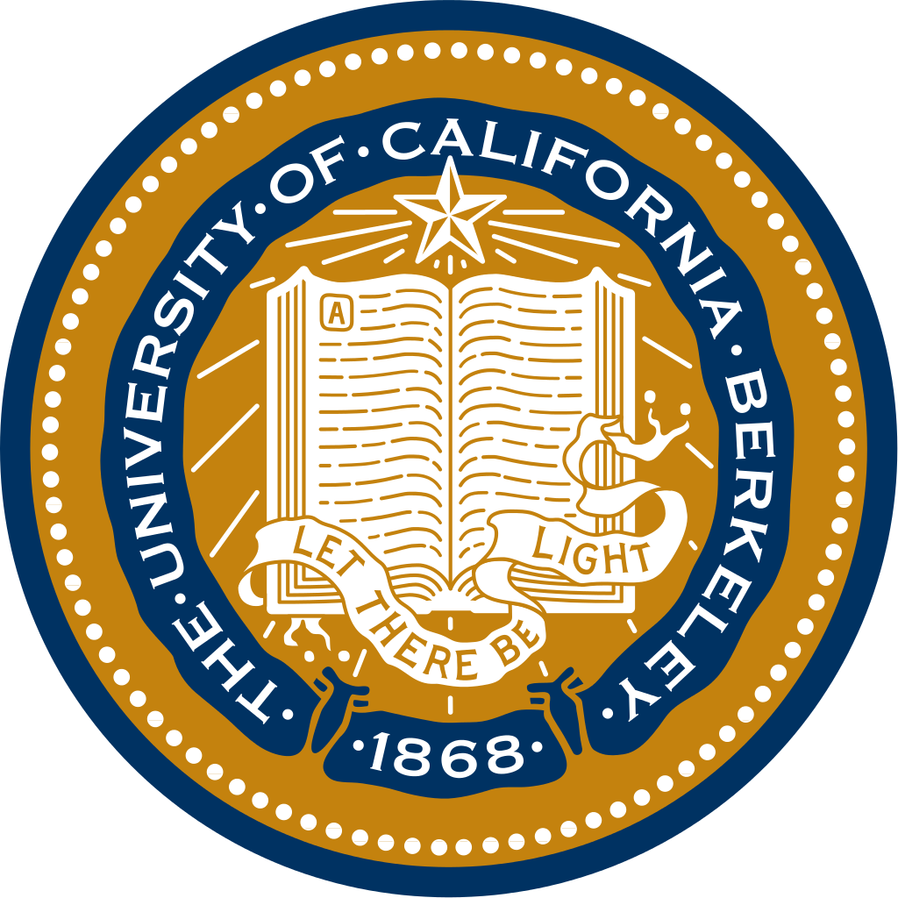
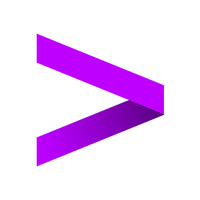
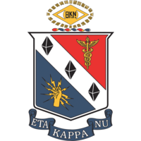

|
Sean Farhat Starting in Fall 2021, I will be pursuing an M.S. in Computer Science at the University of Illinois, Urbana-Champaign. My research interests are in optimization, machine learning, and signal processing. My teaching interests are infinite. Previously, I completed my B.S. in EECS from UC Berkeley. |
| Projects |
|---|
|
Karaoke
code A karaoke web app with improved Forced Alignment algorithm using Convolutional Networks and novel loss function which improves interpretability of end-to-end ASR models. |
|
Kobuki Kart
Rehan Durrani, Sean Farhat, Nick Riasanovsky, Grant Wang EECS 149: Embedded Systems, 2019 report \ code Recreaetd Mario Kart with Roombas. Features included smooth driving via Nintendo Switch controllers and pick-up powerups (nearest-neighbor attack, speedup, stop) via Decawave DWM1001C Tags. |
|
Pendulum Bot
Swapnil Das, Sean Farhat, Cameron Kurotori, Matthew Owen EECS 106A: Robotics, 2018 code \ video Programmed a robot to find a tennis ball on a pendulum, predict the trajectory, and catch it, all from a single image. |
| Experience | |
|---|---|
|  |
Berkeley Artificial Intelligence Research (BAIR)
Research Assitant, 2019-2020 Research assistant in Laurent El Ghaoui's lab. Worked on implicit formulations of deep learning architectures in PyTorch. Investigated different methods for increased robustness such as low rank matrix pertubations. Berkeley SWARM Lab Research Assistant, 2018 Research assistant in Kris Pister's lab. Worked on end-to-end autonomous driving for microrobots utilizing low power Convolutional Neural Nets. |
|  |
Accenture Labs
Systems and Platforms Research Intern, Summer 2019 Work on digital twins in robotic QA settings to reduce costs and training time while improving safety Patent pending: A Digital Twin for Improved DevOps in Robot Applications |
| Teaching | |
|---|---|
| In my time as an undergrad at Berkeley, I served in various teaching capacities: an instructor, TA, course/club/HKN tutor, and lab assistant. For my work as a TA, I was recongized with the campus-wide Outstanding GSI Award. My ratings can be found here and here. | |
|
EECS 127 (Optimization Models), Spring 2020 (Content TA)
CS 61C (Great Ideas in Computer Architecture), Summer 2020 (Instructor) \ Fall 2019 (TA) \ Spring 2019 (TA) \ Fall 2018 (TA) \ Summer 2018 (TA) |
|
| Resources | |
|---|---|
| A collection of learning resources I have created. In total, my videos have been viewed over 16.5k times. The numbered "Lectures" were filmed during the Summer 2020 offering of CS 61C. | |
|
Note: Number Representation
Lecture 7 (RISC-V): video \ slides Lecture 11 (Sequential Digital Logic): video \ slides Lecture 14 (RISC-V Pipeline Hazards): video \ slides Lecture 15 (Caches): video \ slides Lecture 17 (Multi-level Caches): video \ slides Lecture 20 (Input/Output): video \ slides Lecture 23 (Multithreading Issues, Cache Coherency): video \ slides Lecture 25 (Dependability and Redundancy): video \ slides Lecture: Virtual Memory Review Twitch Stream: Caches Review Twitch Stream: Pipelining and Hazards Review Twitch Stream: Virtual Memory |
|
| Service | |
|---|---|
|  |
Department Relations, Tutoring Officer
2018-2020 Student Representative, EE/CS Undergraduate Study Committees 2019-2020 Led creation and release of EECS Undergraduate Experience Survey Department Tour Guide |

|
Berkeley EECS Course Map
A course map for the entire EECS curriculum at Berkeley. Created since Berkeley's "free" curriculum left many students lost. |